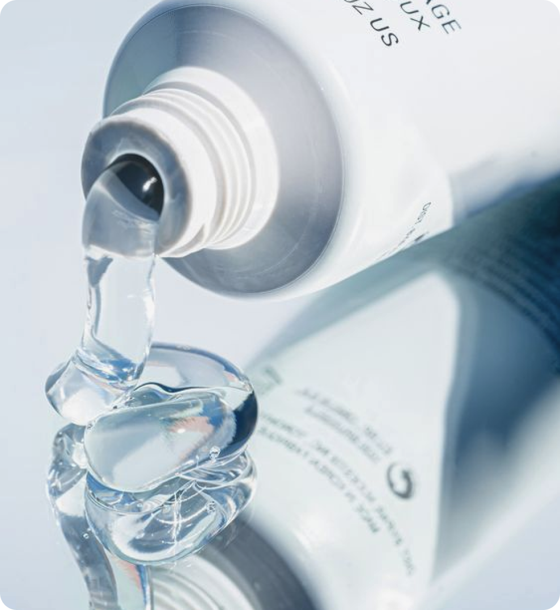
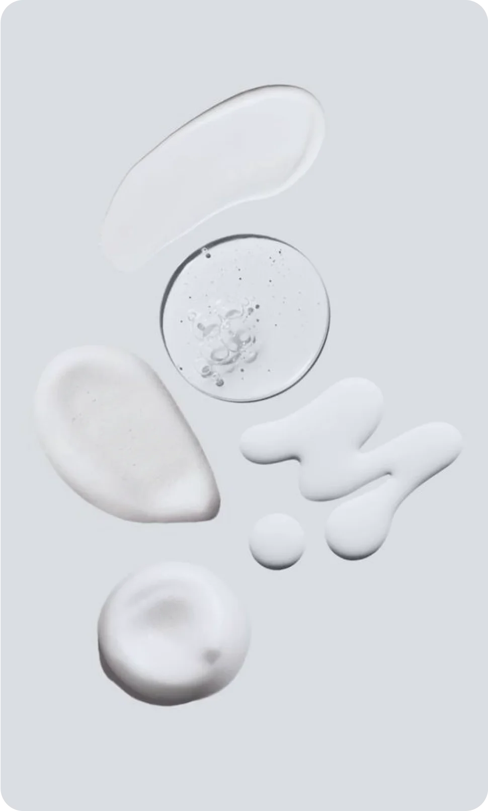

17 марта 2024
средства
составы
советы
Состав косметики для многих является непонятным и сложным. Однако именно он влияет на эффективность тех или иных средств. Сегодня расскажем, как читать состав уходовой косметики так, чтобы с минимальными рисками выбрать максимально подходящее именно вам средство.
Читайте список от начала к концу
Ингредиенты перечисляются в порядке убывания их количества в продукте, поэтому первые ингредиенты обычно составляют основу продукта и присутствуют в нем в большем количестве, поэтому являются наиболее значимыми.
Основа средства
Для того, чтобы активные вещества, входящие в состав, оказывали на кожу нужный эффект, их обязательно следует смешивать с основой, помогающей им впитаться и дойти до места эффективного воздействия. Основа может быть гелевой или эмульсионной. Эмульсионная – это смесь из водной, жирной фазы и эмульгатора. Гелевая основа – это вода и загуститель.
В качественной косметической продукции основу составляют растительные компоненты, такие как: фосфолипиды, гидрооксиполигуар, стеариновая кислота, стеариловый спирт, ацетиловый спирт. Производители косметики в качестве основы могут взять натуральные растительные масла (жожоба, авокадо, абрикос) или же минеральные (вазелин, парафиновое или минеральное масло). Все зависит от того, к какой ценовой категории относится средство.
Активные вещества
Активные вещества воздействуют на внутриклеточные биохимические процессы в различных слоях кожи, питают ее и защищают от повреждающих факторов. Они присутствуют и в дорогой, и в дешевой косметике, разница лишь в том, на каком месте списка ингредиентов они находятся, и какова их процентная доля (чем ближе к началу, тем больше массовая доля вещества в составе). В качественной косметике могут использоваться различные витамины, растительные церамиды и сфинголипиды, всевозможные экстракты и вытяжки из растений.

Консерванты
Ни одно, даже самое дорогое средство, не обходится без добавления консервантов, поскольку консерванты помогают дольше сохранять полезные свойства уходового продукта, а также предотвращают размножение в нем бактерий. Но и тут можно найти огромную разницу в качестве этих добавок. На многих этикетках косметики можно увидеть парабены – синтетические стабилизаторы-консерванты, которые отличаются дешевизной производства, и, соответственно их чаще можно встретить на упаковке недорогой косметики. Продлевать срок косметических продуктов способны не только синтетические консерванты, но и консерванты растительного происхождения.
Обратите внимание на аллергены и добавки
Многие косметические продукты содержат ингредиенты, способные вызвать аллергические реакции у некоторых людей. Изучение списка аллергенов поможет вам избежать продукции, содержащей компоненты, на которые у вас или у ваших близких может быть аллергия.
Также некоторые люди предпочитают избегать определенных добавок в своей косметике по этическим или личным убеждениям, таким как предпочтение натуральных ингредиентов или желание избегать продукции, содержащей определенные химические вещества.
Распространенные вещества в составах
Эти вещества часто используются в косметических продуктах благодаря своим полезным свойствам для улучшения состояния и внешнего вида кожи.
1. Retinol (витамин А): Помогает улучшить текстуру кожи, стимулирует образование коллагена, уменьшает морщины и поддерживает общее здоровье кожи.
2. Hyaluronic Acid (гиалуроновая кислота): Обеспечивает увлажнение кожи, помогает смягчить и улучшить ее упругость.
3. Niacinamide (ниацинамид, витамин В3): Помогает уменьшить воспаление, улучшает структуру кожи, регулирует производство себума и снижает появление пигментации.
4. Ascorbic Acid (витамин С): Мощный антиоксидант, помогает бороться с окислительным стрессом, стимулирует производство коллагена, осветляет кожу и улучшает ее текстуру.
5. Salicylic Acid (салициловая кислота): Используется для эксфолиации кожи, очищения пор и борьбы с прыщами.
6. Alpha Hydroxy Acids (AHA, альфа-гидроксикислоты): Включают в себя вещества, такие как гликолевая кислота и молочная кислота, которые помогают эксфолиировать кожу, улучшают текстуру и стимулируют регенерацию.
7. Beta Hydroxy Acids (BHA, бета-гидроксикислоты): Например, салициловая кислота, которая проникает в поры, помогает очищать и предотвращать акне.
8. Ceramides (церамиды): Укрепляют защитный барьер кожи, увлажняют и смягчают.
9. Vitamin E (витамин Е): Сильный антиоксидант, помогает защитить кожу от свободных радикалов и смягчает ее.
10. Shea Butter (масло ши): Увлажняет и питает кожу, помогает восстановить ее эластичность.
 
Более подробно о веществах и их составах, а также об их совместимости с кожей разных типов вы можете прочитать в нашем словарике терминов.